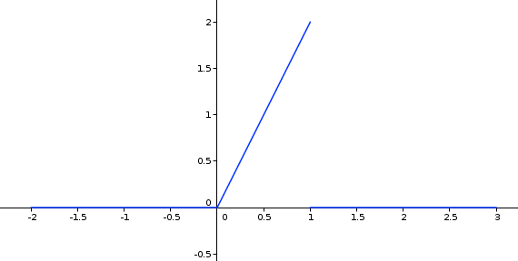

| Choisissez votre langue ! | Choose your language ! |
Pour ce qui concerbe la motivation, nous encourageons le lecteur à commencer par lire ou relire la page consacrée aux en statistique descriptive.
Une approche 'globalisante' du sujet suppose connue la théorie générale de l'intégration de Lebesgue, nous adopterons donc, cette fois encore, une approche progressive au cas par cas.
Cas des univers finis
Soit donc Ω un univers fini et X une v.a. sur cet univers. Soit E(X) l'espérance de X et soient x1,x2, ... ,xp les valeurs distinctes que prend la variable X.Regarding motivation, we encourage the reader to start by reading or rereading the page devoted to in descriptive statistics.
A 'globalizing' approach to the subject assumes that Lebesgue's general theory of integration is known, so we will adopt, this time again, a progressive approach on a case-by-case basis.
Case of finite spaces
Let Ω be a finite space and X a r.v. on this space. Let E(X) be the expectation of X and let x1,x2, ... ,xp be the distinct values that the variable takes\( \displaystyle v(X) = {\sum\limits_{i = 1}^{p}\left( x_{i} - E(x) \right)^{2}P\left( {X = x_{i}} \right)} \)
\( \displaystyle v(X) = {\sum\limits_{i = 1}^{p}\left( x_{i} - E(x) \right)^{2}P\left( {X = x_{i}} \right)} \)
\( \displaystyle v(X) = \sum\limits_{i = 1}^{n}\left( x_{i} - E(X) \right)^{2}p_{i} \)
où Ω={ω1, ω2, ... ,ωn}pi=P({ωi})
xi=X(ωi).
\( \displaystyle v(X) = \sum\limits_{i = 1}^{n}\left( x_{i} - E(X) \right)^{2}p_{i} \)
where Ω={ω1, ω2, ... ,ωn}pi=P({ωi})
xi=X(ωi).
Exemple de calcul
Reprenons et de la variable somme des deux faces.Calculation example
Let's take another look at and the variable sum of the two faces.|
Tableau récapitulatif
Summary
de toutes les situations possibles
of all possible situations
|
Loi de X
Law of X
|
|||||||||||||||||||||||||||||||||||||||||||||||||||||||||||||||||||||||
|
|
Le calcul de la variance donne :
\( \displaystyle \frac{5^{2} \times 1 + 4^{2} \times 2 + 3^{2} \times 3 + 2^{2} \times 4 + 1^{2} \times 5 + 0^{2} \times 6 + 1^{2} \times 5 + 2^{2} \times 4 + 3^{2} \times 3 + 4^{2} \times 2 + 5^{2} \times 1}{36} = \frac{105}{18} \)
The calculation of the variance gives:
\( \displaystyle \frac{5^{2} \times 1 + 4^{2} \times 2 + 3^{2} \times 3 + 2^{2} \times 4 + 1^{2} \times 5 + 0^{2} \times 6 + 1^{2} \times 5 + 2^{2} \times 4 + 3^{2} \times 3 + 4^{2} \times 2 + 5^{2} \times 1}{36} = \frac{105}{18} \)
Cas des univers discrets dénombrables
On suppose qu'on a une distribution de probabilité sur l'ensemble ℕ avec une suite P(n)=pn de sorte que :\( \displaystyle \sum\limits_{n = 0}^{\infty}p_{n} = 1 \)
On suppose également qu'on a une v.a. X sur ℕ possédant une espérance mathématique E(X).Case of countable discrete spaces
We assume that we have a probability distribution over the set ℕ with a sequence P(n)=pn so that:\( \displaystyle \sum\limits_{n = 0}^{\infty}p_{n} = 1 \)
We also assume that we have a r.v. having a mathematical expectation E(X).\( \displaystyle \sum\limits_{n = 0}^{\infty}\left( X(n) - E(x) \right)^{2}p_{n} \)
converge, sa somme notée v(X) s'apelle la variance de X.\( \displaystyle \sum\limits_{n = 0}^{\infty}\left( X(n) - E(x) \right)^{2}p_{n} \)
converges, its sum denoted v(X) is called the variance of X.Exemple de calcul
Reprenons l'exemple de la .Pour tout n ≥ 1 posons X(n)=kn où k est un nombre vérifiant -p < k < p.
On sait que l'espérance est :
\( \displaystyle E(X) = \frac{kpq}{p - k} \)
En utilisant le theorème de König Huygens ci-dessous on trouve :\( \displaystyle v(X) = \frac{{pq}k^{\text{2}}}{p - k^{2}} - \frac{p^{2}q^{2}k^{2}}{\left( {p - k} \right)^{2}} \)
Calculation example
Let's take the example of the .For all n ≥ 1 let X(n)=kn where k is a verifying number -p < k < p.
We know that the expectation is:
\( \displaystyle E(X) = \frac{kpq}{p - k} \)
By using the theorem of Koenig Huygens hereunder we find:\( \displaystyle v(X) = \frac{{pq}k^{\text{2}}}{p - k^{2}} - \frac{p^{2}q^{2}k^{2 }}{\left( {p - k} \right)^{2}} \)
Cas des v.a. à densité
Case of the r.v. with density
\( \displaystyle v(X) = {\int_{- \infty}^{+ \infty}\left( {x - E(x)} \right)^{2}f(x)}{dx} \)
\( \displaystyle v(X) = {\int_{- \infty}^{+ \infty}\left( {x - E(x)} \right)^{2}f(x)}{dx} \)
Exemple de calcul
Reprenons l'exemple de la .La densité est représentée par la fonction :

Sachant, comme on l'a démontré que E(X)=2/3, on a donc :
\( \displaystyle v(X) = {\int_{0}^{1}\left( {x - \frac{2}{3}} \right)^{2}2{xdx} = \frac{1}{18}} \)
Calculation example
Let's take the example of .Density is represented by the function:
Knowing, as we demonstrated that E(X)=2 /3, so we have:
\( \displaystyle v(X) = {\int_{0}^{1}\left( {x - \frac{2}{3}} \right)^{2}2{xdx} = \frac{1}{ 18}} \)
Propriétés
Dans tous les cas, il résulte des définitions de l'espérance et de la variance que :Properties
In all cases, it follows from the definitions of expectation and variance that:Les deux propriétés suivantes résultent des définitions :
The following two properties result from the definitions:
Ecart-type
Standard deviation
σ(X)=√v(X)
σ(X)=√v(X)
Variables réduites
Reduced variables
En outre la variable (X-E(X))/σ(X) est à la fois centrée et réduite.
In addition the variable (X-E(X))/σ(X) is both centered and reduced. We say that it is a standardization of X.
Le coin de Python
Voici un petit programme qui calcule l'espérance et la variance dans le cas de variables aléatoires définies sur un ensemble fini.Ce programme vérifie l'exactitude des calculs d'espérance et de variance donnés dans l'exemple de cette page.
Python's corner
Here is a small program which calculates the expectation and the variance in the case of random variables defined on a finite set.This program checks the correctness of the expectation and variance calculations given in the example on this page.
Le coin de Julia
Julia's corner
|
Création Gilles Dubois - licence CC-BY-SA
Created by Gilles Dubois - licence CC-BY-SA
|
Septembre 2023
September 2023
|
Version mobile Jquery
Mobile Jquery version
|
|